Mechanism-Structured
Intensity, chromaticity, spatial non-uniformity, temporal variation, and dynamic shadows.
Benchmarking Illumination Robustness in Robotic Manipulation Policies
A controlled, mechanism-structured evaluation of how lighting changes alter robot-policy behavior.
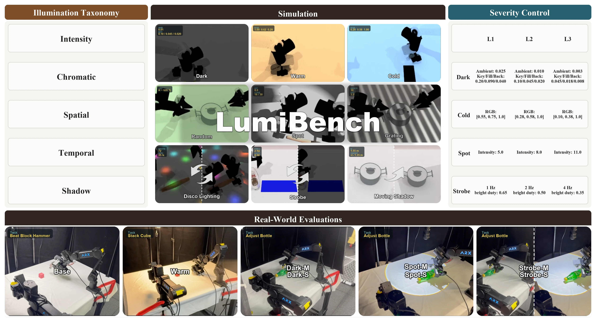
Illumination shifts can substantially degrade robotic manipulation policies, yet existing benchmarks typically treat lighting as a single perturbation factor. LumiBench instead organizes illumination variation by its dominant physical mechanism and evaluates it through paired nominal–perturbed rollouts.
For representative mechanisms, LumiBench adds within-condition severity sweeps to distinguish sensitivity to perturbation onset from degradation under increasing strength. The benchmark is instantiated in RoboTwin 2.0, evaluates five representative policy families across ten tasks, and is complemented by controlled physical experiments.
Intensity, chromaticity, spatial non-uniformity, temporal variation, and dynamic shadows.
Task semantics, geometry, robot state, camera setup, checkpoint, and initialization are held fixed while illumination changes.
Ordered severity sweeps expose response regimes, while controlled real-world trials test whether selected vulnerabilities persist.
LumiBench treats robustness as a controlled intervention problem: what changes when the illumination condition changes, and everything else is kept as constant as possible?
Global illumination strength.
Light-source color characteristics.
Non-uniform illumination structure.
Time-varying illumination.
Geometry-coupled moving shadows.
One nominal Base condition plus nine controlled illumination perturbations across the five mechanisms. Disco Lighting serves as a composite stress condition.
Dark, Cold, Spot, and Strobe are swept over three ordered severity levels with physically interpretable controls.
Selected illumination conditions are recreated on an ARX X5 platform to test whether simulation-identified sensitivity patterns persist.
Nine scene-level interventions; no image-space post-processing.
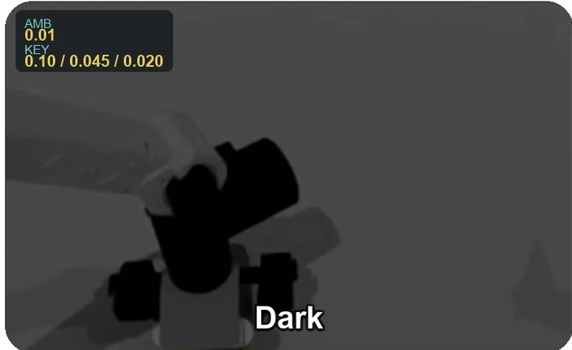
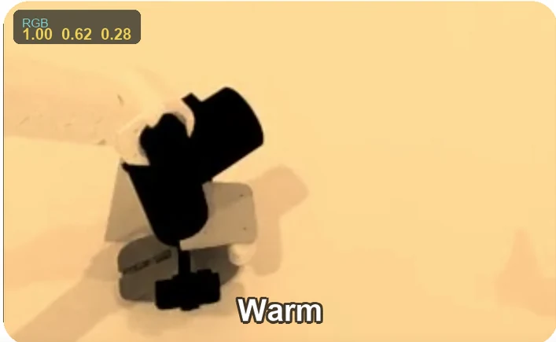
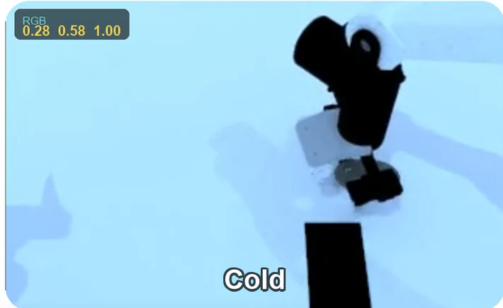
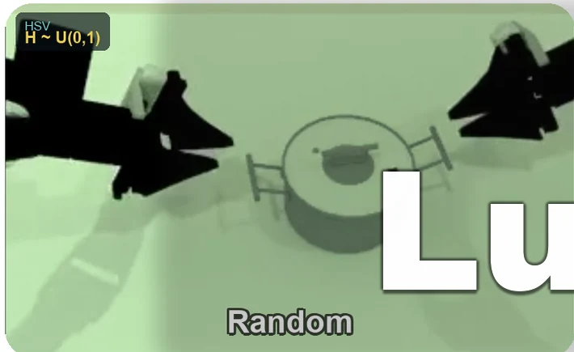
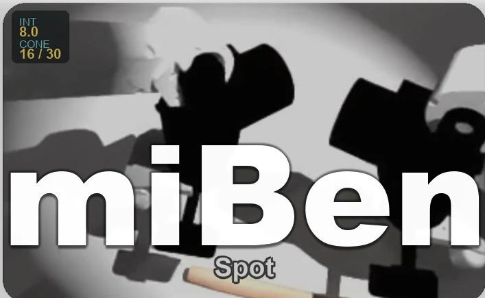
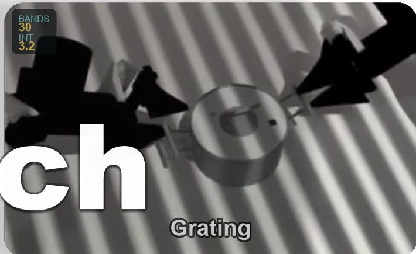
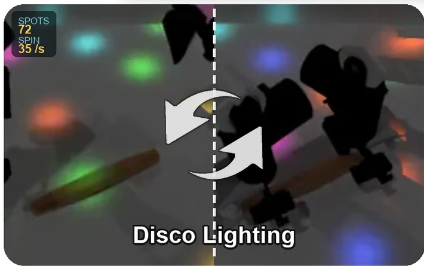
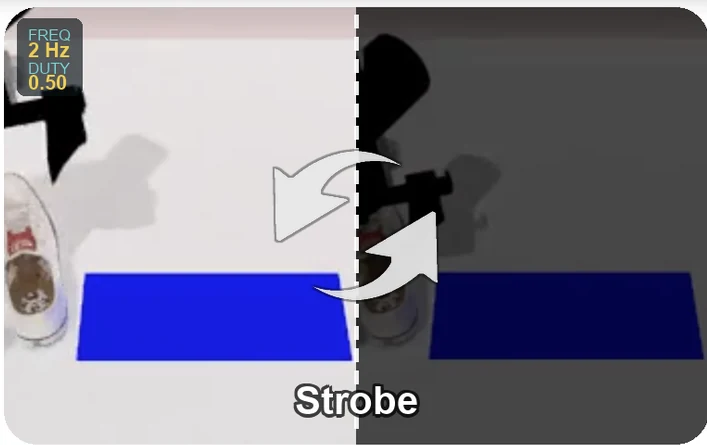
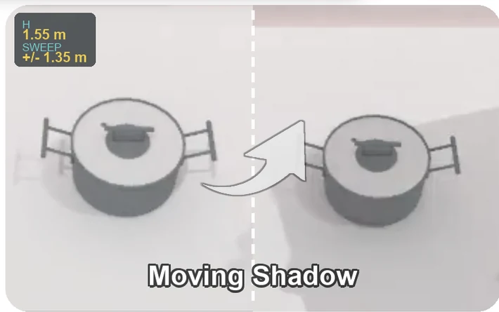
The benchmark separates the first cost of introducing a perturbation from additional degradation as that perturbation becomes stronger.
L0 is Base. L1–L3 are ordered within each mechanism and are not assumed to be quantitatively comparable across mechanisms.
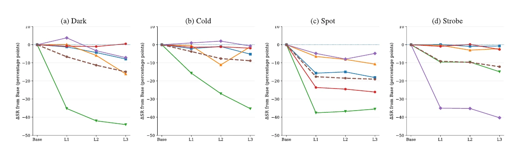
Different policies fail under different lighting mechanisms, and nominal task success does not reliably predict illumination robustness.
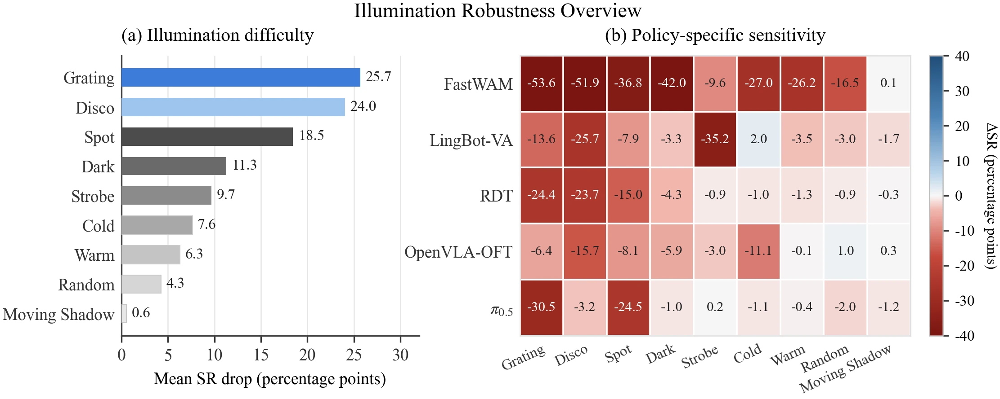
Largest mean success-rate drop under the canonical benchmark settings.
Composite chromatic, spatial, and temporal variation is also strongly disruptive.
Localized spatial non-uniformity causes a large average drop and is reproduced in physical tests.
Nearly harmless on average at the selected canonical setting, despite other lighting shifts being damaging.
Mean retention is the average fraction of Base performance retained across the nine perturbations.
| Policy | Base SR (%) | Mean retention (%) | Example sensitivity |
|---|---|---|---|
| RDT | 42.6 | 81.3 | Spatial + composite conditions |
| OpenVLA-OFT | 46.7 | 88.3 | Broad, relatively mild sensitivity |
| FastWAM | 54.3 | 46.1 | Large drops across many mechanisms |
| π0.5 | 73.9 | 90.4 | Mainly spatial non-uniformity |
| LingBot-VA | 48.7 | 79.0 | Temporal / composite sensitivity |
These differences are observational benchmark results; the evaluation does not isolate architecture, pretraining data, or fine-tuning procedure as causal factors.
On Adjust Bottle, matched initial conditions under Base and Disco Lighting lead to visibly different end-effector trajectories, illustrating that illumination shift can propagate from perception into action.
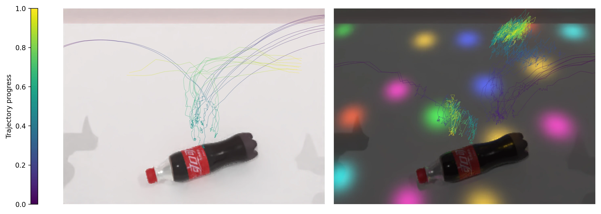
Physical tests use an ARX X5 platform, fixed camera poses, disabled automatic exposure and white balance, and 16 trials per policy–task–condition configuration.
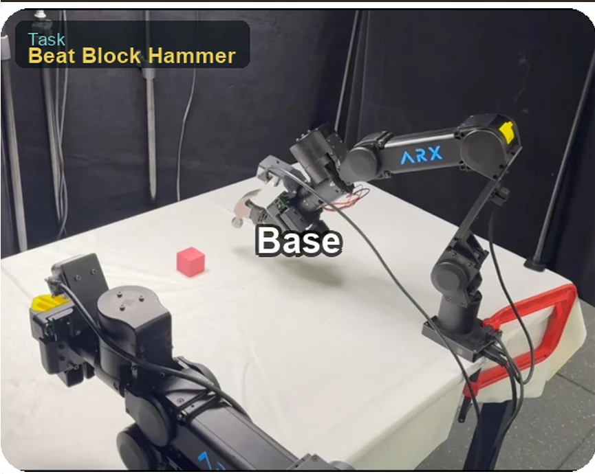
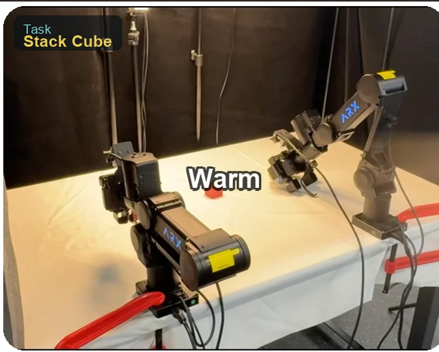
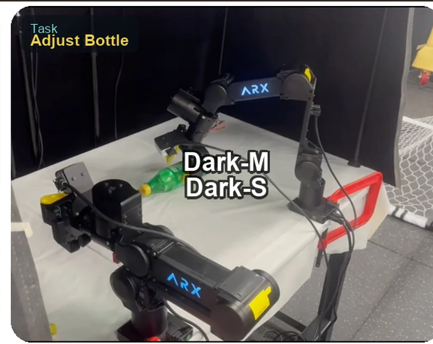
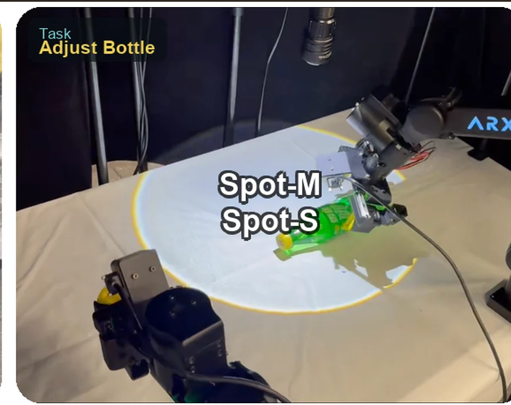
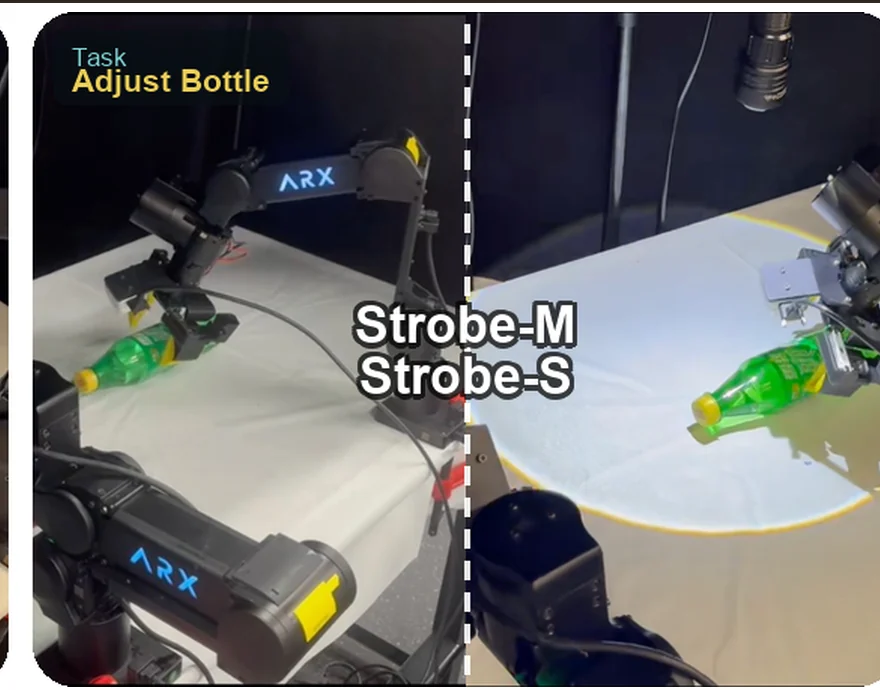
After 16/16 Base success, all trials fail under Dark, Spot, and localized Strobe in the reported physical setup.
Severe Spot reduces all three evaluated π0.5 physical tasks to 0/16 success.
The physical Strobe uses intermittent switching of the same localized light as Spot, so it is a controlled stress condition—not a mechanism-matched realization of simulated global Strobe.
| Policy | Task | Base | Warm | Dark-M | Dark-S | Spot-M | Spot-S | Strobe-M | Strobe-S |
|---|---|---|---|---|---|---|---|---|---|
| π0.5 | Adjust Bottle | 16/16 | 14/16 | 14/16 | 13/16 | 1/16 | 0/16 | 4/16 | 0/16 |
| Beat Block Hammer | 14/16 | 15/16 | 1/16 | 0/16 | 0/16 | 0/16 | 1/16 | 0/16 | |
| Stack Cube | 10/16 | 12/16 | 8/16 | 0/16 | 0/16 | 0/16 | 0/16 | 0/16 | |
| FastWAM | Adjust Bottle | 16/16 | 14/16 | 0/16 | 0/16 | 0/16 | 0/16 | 0/16 | 0/16 |
| Beat Block Hammer | 16/16 | 16/16 | 6/16 | 7/16 | 0/16 | 0/16 | 0/16 | 0/16 | |
| Stack Cube | 0/16 | 0/16 | 0/16 | 0/16 | 0/16 | 0/16 | 0/16 | 0/16 |
Stack Cube for FastWAM is at 0/16 already under Base and therefore does not support a meaningful illumination-robustness comparison.
The current manuscript is anonymized, so the project page intentionally does not expose an author list or fabricate a public citation. Replace the citation block after the public version is released.
LumiBench: Benchmarking Illumination Robustness in Robotic Manipulation PoliciesAuthor names, venue status, arXiv identifier, repository URL, and dataset URL can be filled in from one small configuration area in index.html.